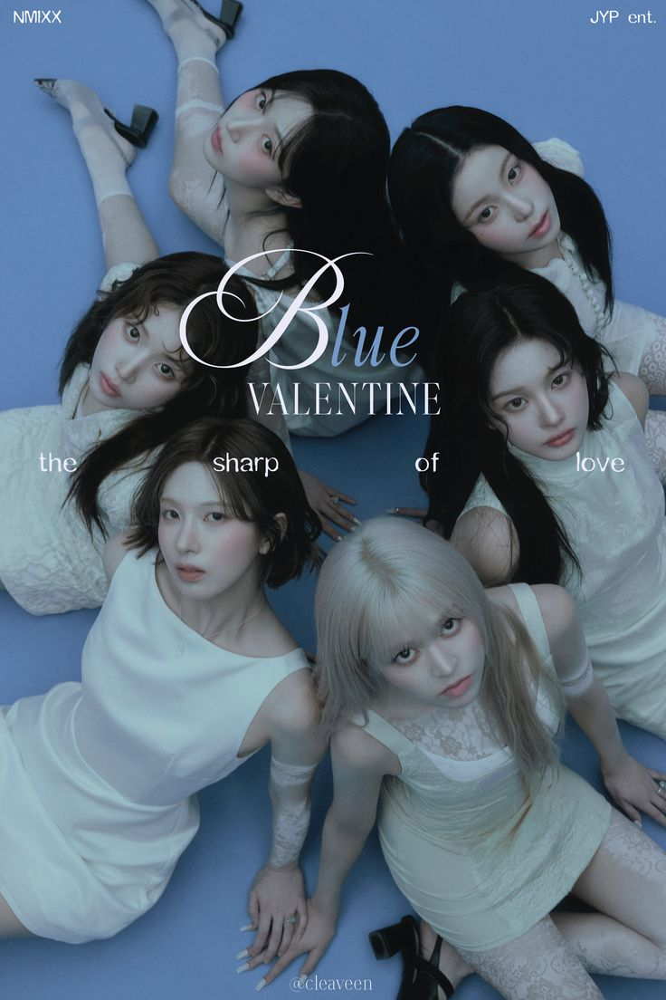
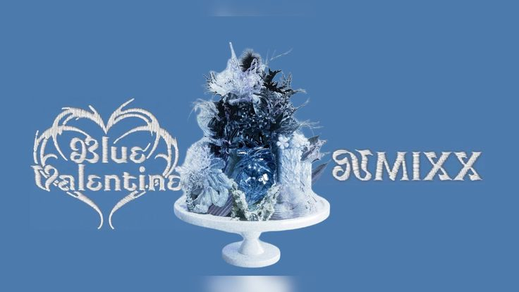
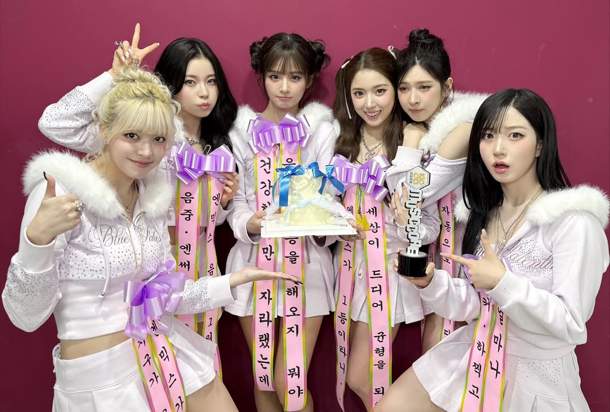

MY IDOL
Welcome to the blog of introducing

NMIXX
A girl music group launched by JYP Entertainment in South Korea. February 22, 2022
NMIXX是由兩個部分組成：N具有現在（now）、全新（new）、下一個（next）和未知數n等多重意義，MIX則象徵團體所展現的多樣面貌，兩詞組合而成的NMIXX即有「新時代的最佳團體」之意。

Blue Valentine
NMIXX的首張錄音室專輯 October 13, 2025
展現她們音樂上的成長與多樣性，並藉由同名主打曲《Blue Valentine》表達情感的細膩與成熟。

Blue Valentine的成績
截至October 26, 2025
Show Champion（MBC M） 2025 Oct 22 NMIXX 以《Blue Valentine》獲得首位。
M Countdown（Mnet） 2025 Oct 23 獲得第2位音樂節目首位。
Music Bank（KBS2） 2025 Oct 24 獲得第3位音樂節目首位。
Show! Music Core（MBC） 2025 Oct 25 再度獲首位(該節目第一次首位)。
Inkigayo（SBS） 2025 Oct 26 獲得首位。
在 Melon 日榜從 10/13（第 85 名）一路上升，於 10/22 登上第一名。
先行曲發表
2025年10月2日
「渴望這老套的劇情延續 我們注定糾纏不清」，歡迎聆聽！
官方 MV
請點擊圖片!!

主打歌發表
2025年10月13日
「如果這段愛結束，我還會再衝進去」，歡迎聆聽！
官方 MV
請點擊圖片!!